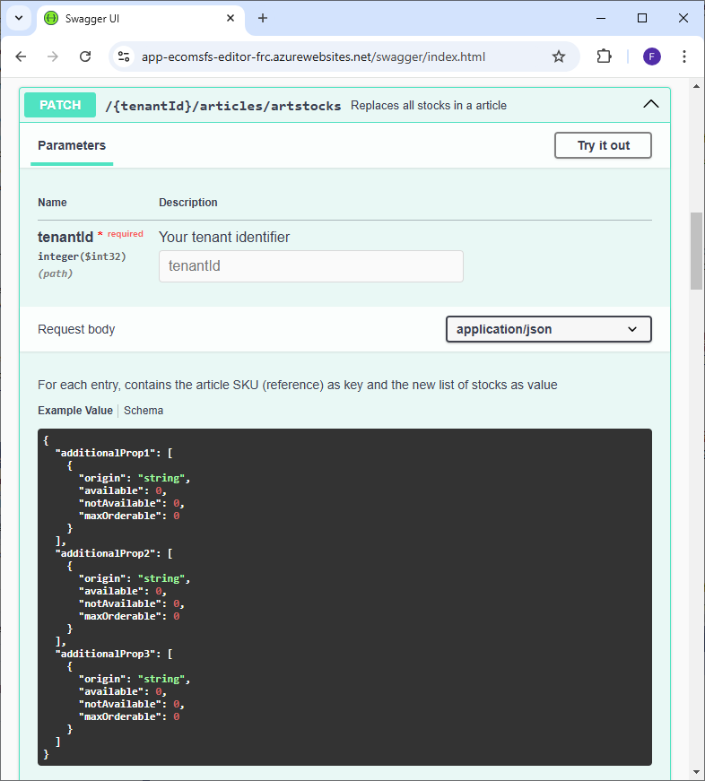

Cycle de vie des données
Afin d’utiliser le module, des données concernant les articles, les origines de stocks et les commandes doivent être synchronisées avec vos composants. Ces données doivent ainsi être récupérées depuis votre système d'information et formatées avant être envoyées au module Delivery Optimizer (DO) en format JSON (Échange Informatique de Données ou EDI).
Les sources d’approvisionnement disponibles dans les outils logisitiques d’Altazion permettent de configurer avec précision l’export des articles, des origines de stocks et des commandes vers le module et d’automatiser la procédure en toute simplicité.
Si vous n'utilisez pas les outils d'Altazion, il existe de nombreux points API couvrant les besoins en CRUD des origines de stocks (StockOrigins), Articles et commandes (OrderDo) dont les fonctions sont détaillées dans le swagger. Toutefois les points expliqués ci-dessous sont les plus importants à implémenter pour garantir le fonctionnement du module.
À noter que la gestion des données nécessite le droit OMS.
Import total des StockOrigins et des Articles dans Delivery Optimizer (DO)
Ces points API sont la principale source de données du module DO et sont indispensables à son bon fonctionnement. Cet import a pour effet d’exécuter une transaction supprimant toutes les données de la raison juridique concernée avant d’insérer les nouvelles données passées en format JSON.
Il est recommandé :
- De réaliser les imports à la suite
- D’automatiser l’import de données durant une heure de faible utilisation du module (la nuit par exemple)
- De disposer de méthodes robustes d’export de vos données depuis vos composants vers le module DO si vous n’utilisez pas la solution Altazion
- D’utiliser l’import total avec parcimonie pour limiter l’impact sur les performances, en particulier si vous disposer d’un gros volume de données à importer
- De mettre à jour/rajouter des données via les points API d’upsert décrits plus bas plutôt que de réimporter systématiquement toutes les données
L'import total des données en base se fait via les points API suivants :
POST : {tenantId}/stock-origins/importfull
Ce point API permet l'import des origines de stock dans la base via un tableau d'objets StockOrigin passé dans le body en format JSON.
POST : {tenantId}/articles/importfull
Ce point API permet l'import des articles dans la base via un tableau d'objets Article passé dans le body en format JSON.
Ces points API sont utilisés par les sources d'approvisionnement d'Altazion pour envoyer les données calculées vers Delivery Optimizer.
Si vous utilisez Unified Stock les stocks (liste de ArticleStock) ne sont pas envoyées par les Sources d'Approvisionnement mais par le module de traitement des stocks plus tard dans le processus via le point API "Mise à jour des stocks dans les Articles" détaillé plus bas.
Upsert des StockOrigins et des Articles dans le module
En complément des imports totaux qui nettoient la base avant d’insérer les données importées, il est possible de pousser des fichiers de mise à jour des Articles et StockOrigins. Ces points API servent à mettre à jour les éléments déjà en base et à ajouter ceux contenu dans le JSON qui ne s’y trouvaient pas auparavant (upsert).
PUT : {tenantId}/stock-origins
Ce point API permet l’upsert des origines de stock dans la base via un tableau d'objets StockOrigin passé dans le body en format JSON.
PUT : {tenantId}/articles
Ce point API permet l'upsert des articles dans la base via un tableau d'objets Article passé dans le body en format JSON.
Ces points API sont utilisés par les Sources d'Approvisionnement pour envoyer les disponibilités recalculées au long de la journée lorsque vous n'utilisez pas Unified Stock.
Mise à jour des stocks dans les Articles
Ce point API permet de remplacer les stocks de plusieurs articles. Pour cela il est nécessaire de passer un dictionnaire contenant la référence de l'article en clef et sa liste d'ArticleStock en valeur dans le body de la requête. Ce dictionnaire devra être formaté en JSON.
PATCH : {tenantId}/articles/artstocks
Le point est disponible dans la partie Articles du swagger :

Cette fonctionnalité API est utilisée par Unified Stock pour l'envoie des disponibilités recalculées en temps réel à Delivery Optimizer après la réception de stock mis à jour.